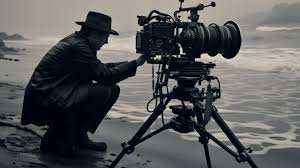
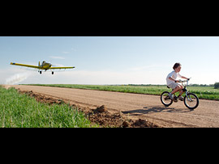
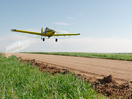

The art, technique or science of filmmaking, which includes the process of shooting and the development of a film

Cinematography (from Ancient Greek κίνημα (kínēma) 'movement' and γράφειν (gráphein) 'to write, draw, paint, etc.') is the art of motion picture (and more recently, electronic video camera) photography.
Cinematographers use a lens to focus reflected light from objects into a real image that is transferred to some image sensor or light-sensitive material inside the movie camera.[1] These exposures are created sequentially and preserved for later processing and viewing as a motion picture. Capturing images with an electronic image sensor produces an electrical charge for each pixel in the image, which is electronically processed and stored in a video file for subsequent processing or display. Images captured with photographic emulsion result in a series of invisible latent images on the film stock, which are chemically "developed" into a visible image. The images on the film stock are projected for viewing in the same motion picture.
Cinematography finds uses in many fields of science and business, as well as for entertainment purposes and mass communication.
Historty of
CINEMATOGRAPHY
In the 1830s, three different solutions for moving images were invented based on the concept of revolving drums and disks, the stroboscope by Simon von Stampfer in Austria, the phenakistoscope by Joseph Plateau in Belgium, and the zoetrope by William Horner in Britain.
In 1845, Francis Ronalds invented the first successful camera able to make continuous recordings of the varying indications of meteorological and geomagnetic instruments over time. The cameras were supplied to numerous observatories around the world and some remained in use until well into the 20th century.[2][3][4]
William Lincoln patented a device, in 1867 that showed animated pictures called the "wheel of life" or "zoopraxiscope". In it moving drawings or photographs were watched through a slit.
On 19 June 1878, Eadweard Muybridge successfully photographed a horse named "Sallie Gardner" in fast motion using a series of 24 stereoscopic cameras. The cameras were arranged along a track parallel to the horse's, and each camera shutter was controlled by a trip wire triggered by the horse's hooves. They were 21 inches apart to cover the 20 feet taken by the horse stride, taking pictures at one-thousandth of a second.[5] At the end of the decade, Muybridge had adapted sequences of his photographs to a zoopraxiscope for short, primitive projected "movies", which were sensations on his lecture tours by 1879 or 1880.
Four years later, in 1882, French scientist Étienne-Jules Marey invented a chronophotographic gun, which was capable of taking 12 consecutive frames a second and recording all the frames of the same picture.
Basics of cinematography
Types of shorts
Extreme long shots
Bird's eye shot
medium shot
close up shot
crane shot
Zoom shot
Tilt shot
Lights are very important expect in cinematography
Lights helps to display the emotions Lighting holds immense power in shaping a film's visual narrative, though it often goes unappreciated. The right lighting breathes life into scenes, enhances the intended mood, and reveals character traits and narrative themes. In addition, it plays an indispensable role in establishing time and location.
Cinematography and film lighting is closely similar to photography lighting. You’ve probably heard many of these techniques, especially if you’ve done some studio photography in the past, but it helps to learn how they can uniquely benefit filmmakers in creating different moods and atmospheres in every scene.
It’s also important to note that these techniques are not clear-cut, so many of them can actually take the form of several other film lighting techniques. What matters is that you learn what each is good for and are able to make the best use of them for achieving your cinematic goals. The following are all the different types of lighting in film:
Film light List
Key Lighting
Fill Lighting
Back Lighting
Side Lighting
Practical Light
Hard Lighting
Soft Lighting
Bounce Lighting
High Key
Low Key
Motivated Lighting
Ambient Light
KEY LIGHTING - The key light is also known as the main film light of a scene or subject. This means it’s normally the strongest type of light in each scene or photo. Even if your lighting crew is going for a complicated multi-light setup, the key light is usually the first to be set up.
However, just because it’s your “main” light doesn’t mean it always has to be facing your subject. You can place your key light anywhere, even from the side or behind your subject to create a darker mood. Just avoid placing it near or right beside the camera as this will create flat and direct lighting for your subject.
FILL LIGHTING - As the name suggests, this technique is used to “fill in” and remove the dark, shadowy areas that your key light creates. It is noticeably less intense and placed in the opposite direction of the key light, so you can add more dimension to your scene.
Because the aim of fill lighting is to eliminate shadows, it’s advisable to place it a little further and/or diffuse it with a reflector (placed around 3/4 opposite to the key light) to create softer light that spreads out evenly. Many scenes do well with just the key and fill studio lighting as they are enough to add noticeable depth and dimension to any object.
BACK LIGHTING - Backlighting is used to create a three-dimensional scene, which is why it is also the last to be added in a three-point lighting setup. This also faces your subject—a little higher from behind so as to separate your subject from the background.
As with fill lighting, you’ll want to also diffuse your backlight so it becomes less intense and covers a wider area of your subject. For example, for subject mid-shots, you’ll want to also light up the shoulders and base of the person’s neck instead of just the top of their head. This technique can also be used on its own, without the key and fill lights if you’re aiming for a silhouette.
When to Use Backlighting:
Use backlight to accentuate the silhouette of a subject, whether it’s a person or an object. Backlighting creates a halo effect for increased impact.
SIDE LIGHTING - Needless to say, side lighting is for illuminating your scene from the side, parallel to your subject. It is often used on its own or with just a faint fill light to give your scene a dramatic mood or what’s referred to as “chiaroscuro” lighting. To really achieve this effect, your side light should be strong so as to create strong contrast and low-key lighting that reveals the texture and accentuates the contours of your subject.
When used with a fill light, it’s advisable to lessen the fill light’s intensity down to 1/8 of that of the side light to keep the dramatic look and feel of a scene.
When to Use Side Lighting:
Side lighting brings out the textures or edges in a scene. Using side lighting creates a better sense of depth in a location. It can make subjects seem farther off by accentuating the space between them.
PRACTICAL LIGHTING - Practical lighting is the use of regular, working light sources like lamps, candles, or even the TV. These are usually intentionally added in by the set designer or lighting crew to create a cinematic nighttime scene. They may sometimes be used to also give off subtle lighting for your subject.
However, practical lights are not always easy to work with, as candles and lamps are typically not strong enough to light up a subject. A hidden, supplementary motivated light (more on that later) may be used or dimmers can be installed in lamps so the light’s intensity can be adjusted
BOUNCE LIGHTING - Bounce lighting is about literally bouncing the light from a strong light source towards your subject or scene using a reflector or any light-colored surface, such as walls and ceilings. Doing so creates a bigger area of light that is more evenly spread out.
If executed properly, bounce lights can be used to create a much softer key, fill, top, side, or backlighting, especially if you don’t have a diffuser or softbox.
When to Use Bounce Lighting:
Bouncing light off the ceiling creates more diffuse illumination and results in even, soft light. When you need more ambient light across a whole environment, bounce light is a great choice.
SOFT LIGHTING - Soft light doesn’t refer to any lighting direction, but it’s a technique nonetheless. Cinematographers make use of soft lighting (even when creating directional lighting with the techniques above) for both aesthetic and situational reasons: to reduce or eliminate harsh shadows, create drama, replicate subtle lighting coming from outside, or all of the above.
When to Use Soft Lighting:
Soft lighting is more flattering on human subjects. The soft quality of the light minimizes the appearance of shadows, wrinkles, and blemishes. Use soft lighting for beautification
HARD LIGHTING - Hard light can be sunlight or a strong light source. It’s usually unwanted, but it certainly has cinematic benefits. You can create hard lighting with direct sunlight or a small, powerful light source.
Despite it creating harsh shadows, hard lighting is great for drawing attention to your main subject or to an area of the scene, highlighting your subject’s contour, and creating a strong silhouette.
When to Use Hard Lighting:
Hard lighting emphasizes changes in contour, shape, and texture. Use hard lighting to create a more intense look.
HIGH KEY - High key refers to a style of lighting used to create a very bright scene that’s visually shadowless, often close to overexposure. Lighting ratios are ignored so all light sources would have pretty much the same intensity. This technique is used in many movies, TV sitcoms, commercials, and music videos today, but it first became popular during the classic Hollywood period in the 1930s and 40s.
When to Use High Key Lighting:
Use high key lighting for dreamy sequences, or situations that require overwhelming brightness.
LOW KEY - Being the opposite of high key, low key lighting for a scene would mean a lot of shadows and possibly just one strong key light source. The focus is on the use of shadows and how it creates mystery, suspense, or drama for a scene and character instead of on the use of lighting, which makes it great for horror and thriller films.
When to Use Low Key Lighting:
Use low key lighting for moody scenes that require a film noir look or for nighttime scenes.
MOTIVATED LIGHTING - Motivated lighting is used to imitate a natural light source, such as sunlight, moonlight, and street lamps at night. It’s also the kind of lighting that enhances practical lights, should the director or cinematographer wish to customize the intensity or coverage of the latter using a separate light source.
To ensure that your motivated lighting looks as natural as possible, several methods are used, such as the use of filters to create window shadows and the use of colored gels to replicate the warm, bright yellow light coming from the sun or the cool, faint bluish light from the moon.
When to Use Motivated Lighting:
Use motivated lighting when you want to replicate a specific light source’s quality of light. Filters, diffusers, and other modifiers are helpful in these applications.
Ambient LIGHTING - Using artificial light sources is still the best way to create a well-lit scene that’s closely similar to or even better than what we see in real life. However, there’s no reason not to make use of ambient or available lights that already exist in your shooting location, may it be sunlight, moonlight, street lamps, or even electric store signs.
When shooting during the day, you could always do it outdoors and make use of natural sunlight (with or without a diffuser) and supplement the scene with a secondary light for your subject (bounced or using a separate light source). Early in the morning and late in the afternoon or early evening are great times for shooting outdoors if you want soft lighting. The only downside is that the intensity and color of sunlight are not constant, so remember to plan for the weather and sun placement.
When to Use Ambient Lighting:
Use ambient lighting when you want to illuminate your subjects without worrying about a specific style or quality of light. Ambient lighting is a relatively universal light source that evenly illuminates whole environments or scenes.
The Ratios
2.39:1
1.85:1
16:9 HD
2:1& Crop Vertically
16:9& Crop Vertically
4K HD & Downsize 2X
Ratios are important
In the early days, 1.33:1 (4:3) was the most commonly used aspect ratio for 35mm silent films, which in turn was chosen because 70mm film was already being mass-produced for still photography. This then had to narrow slightly to 1.17:1 due to the unanticipated rise of "talkies" on PhonoFilm, which required space for the audio track. By 1932, the Academy of Motion Pictures agreed to revert back to a wider standard of 1.375:1.
The "Academy" standard persisted until the development of television drove film studios to distinguish themselves using even wider aspect ratios in the 1950s, such as Cinerama (2.66:1) and VistaVision (up to 2:1). Aspect ratios remained diverse for several decades, in part because of various new audio technologies, but also because theaters had to get equipped with new masks and projectors. Throughout this timeframe, cinema generally remained wider than television.Note: Many say 2.39:1, 2.40:1 ("two-four-oh") or 2.35:1, but nowadays these typically all refer to the same 2.39:1 aspect ratio. 2.35:1 was an earlier SMTPE widescreen standard prior to 1970, and two-four-oh is just an incorrect rounding from 2.39:1 to 2.40:1 instead of to 2.4:1.
Although having fewer aspect ratios has helped simplify distribution, complications can still arise when there is a mismatch between the capture and display. This was especially problematic when using standard definition 4:3 televisions to display widescreen DVDs, which are often cropped dynamically using a "pan and scan" technique that alters the composition. Otherwise the displayed image has to be padded, which reduces the image area and perceived detail:
Eventually cinema converged on two leading standards: a normal 1.85:1 widescreen and an anamorphic 2.39:1 widescreen. With television, the formats became 4:3 with standard definition and later 16:9 with high definition, which at 1.78:1 was a close match to 1.85:1 widescreen cinema.


For more information click on the 'Search here button' above
Written by Janvi Vaidya .
Visit us at: GNUMS.com
Parul University,Vadodara
India
.
.jpg)
.jpg)